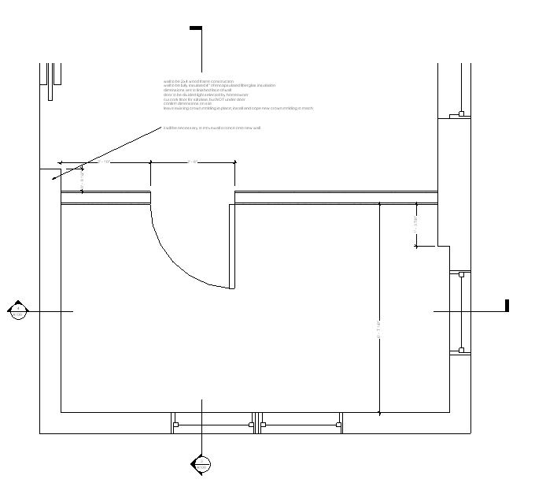

This was the conclusion of the Bookshelf project. The client had decided that after a couple years the piece of Ikea shelving used to separate the bedroom from the writing space should be replaced with a real wall. It was a pleasure to describe exactly where the wall should be, exactly how far from the door to the bedroom the door to the office should be located and so on. We made certain that there was enough wall available for the Ikea shelf.
The space is a success, creating enough privacy and separation to be a haven for a writer who is usually surrounded by the chaos of a large, active family.
Gallery
×

A portion of our construction document for the office, this was a plan of the space showing the placement of the new wall.